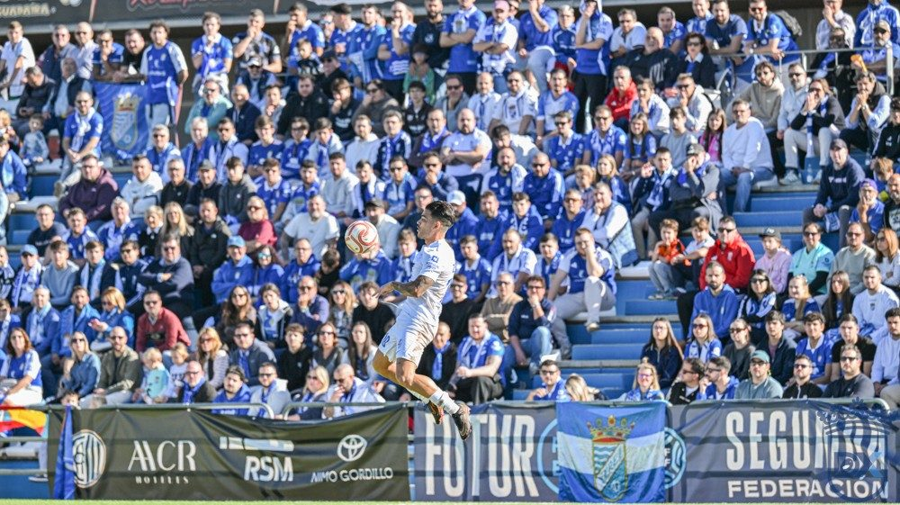

Sevilla Atlético v Xerez CD to be played on Sunday 13 December at 11:30

Photo: Diario XerecistaThe kick-off time has been set for Xerez CD's visit to Sevilla's reserve side, on matchday 15 of Group IV of Segunda RFEF. The match will be played in the morning, on Sunday 13 December at 11:30, at the Jesús Navas stadium.
The match will close a demanding run for Xerez. Before it, they host Linares Deportivo at Chapín this Sunday, 29 November, at 18:00, and then travel to Gran Canaria to face Las Palmas Atlético on 6 December.
Two different situations in the table
Xerez will go into that game from the top of the table: they are currently second, with 21 points from 12 matches. Sevilla Atlético are thirteenth, in the play-out position, with 14 points, after losing 1-2 to Recreativo de Huelva in the postponed matchday 11 fixture.
The return fixture between the two sides is scheduled at Chapín for 7 March 2027.
🇪🇸 Leer en español ← Back to home